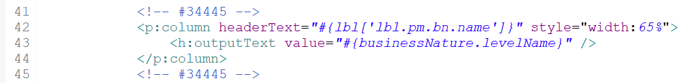
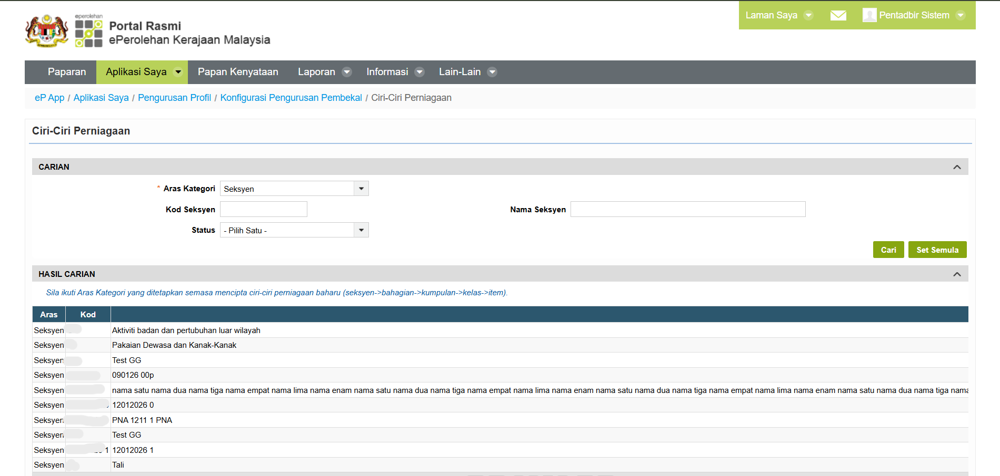
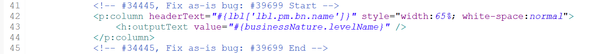
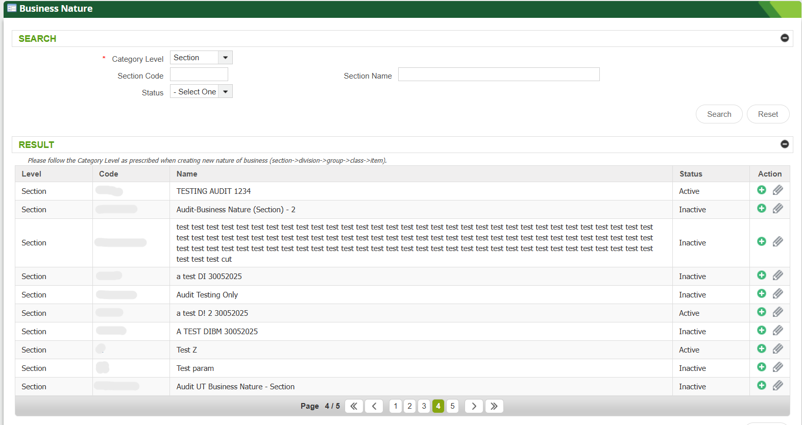

TECHNICAL REPORT
Issue Fixing & Testing Workflow
Workflow used during debugging, fixing issues, and testing processes.
Issue Reported
Task or issue received through the Redmine system, where assigned tasks, issue details, and related requirements were reviewed before starting the debugging and fixing process.
Debug Code

Examined system logs and runtime behavior to pinpoint the issue and locate the corresponding code within the Eclipse development environment.
Identify Root Cause

Determined the root cause of the problem by analyzing the identified code and application behavior to understand why the issue occurred.
Apply Code Fix

Created and switched to the Redmine branch to implement code changes, then applied code modifications to address the root cause of the problem and restore expected system behavior.
Local Testing

Test functionality in Local environment before merging the code.
Merge Code
Committed and pushed the updated code to the repository. After updating the branch, the latest changes from the master branch were pulled to ensure synchronization. The Redmine branch was then merged into the master branch, and the repository was refreshed to verify that all updates were successfully reflected.
Sanity Testing
Performed functional testing on the impacted file by logging in with the appropriate user role, accessing the affected module or screen, and validating that all related functionalities operated correctly after the code modifications.
Generate Test Report
Recorded the testing outcomes and issue resolution process and uploaded the updates to Redmine for documentation and issue tracking purposes.
Additional Environment Testing
If required, the same implementation and testing procedures were performed in other environments to ensure successful deployment and consistent system functionality.
Key Learning Outcomes
Skills and knowledge gained throughout the industrial training period.
Technical Skills
- Improved debugging and troubleshooting skills using Eclipse and system logs.
- Enhanced understanding of version control and branch management using Git and Redmine workflows.
- Gained hands-on experience in software testing, including local testing and sanity testing.
- Developed knowledge in issue tracking, code merging, and repository synchronization processes.
- Strengthened understanding of system environments and deployment procedures.
Professional Skills
- Improved communication skills through collaboration with team members and reporting updates.
- Learned the importance of documentation and proper reporting during issue resolution processes.
- Enhanced time management skills by handling assigned tasks within deadlines.
- Developed adaptability in handling different technical issues and changing requirements.
- Strengthened responsibility and professionalism when managing real project tasks.
Problem-Solving Skills
- Learned to analyze issues systematically to identify the root cause effectively.
- Improved critical thinking skills when evaluating system behavior and debugging errors.
- Developed the ability to apply suitable solutions based on testing outcomes.
- Enhanced decision-making skills during troubleshooting and implementation processes.
- Strengthened attention to detail to ensure system stability after fixes were applied.
Challenges & Solutions
Challenges encountered throughout the industrial training period and the solutions applied to overcome them.
Understanding Existing System Structure
Difficulty understanding the existing system structure and large codebase.
Referred to existing code and documentation to better understand the system flow and functionality.
Deployment & Environment Issues
Errors occurred during deployment across different environments such as DEV, SIT, and UAT.
Applied step-by-step debugging and log analysis techniques to trace and resolve the issues.
System Stability & Testing
Risk of introducing new bugs while ensuring all system components remained stable under time constraints.
Performed repeated testing after implementing fixes to ensure system stability and functionality.
GitLab Merge Workflow
Faced code merge conflicts and approval restrictions during the GitLab workflow process.
Followed the proper GitLab workflow and improved branch discipline after learning from previous mistakes.